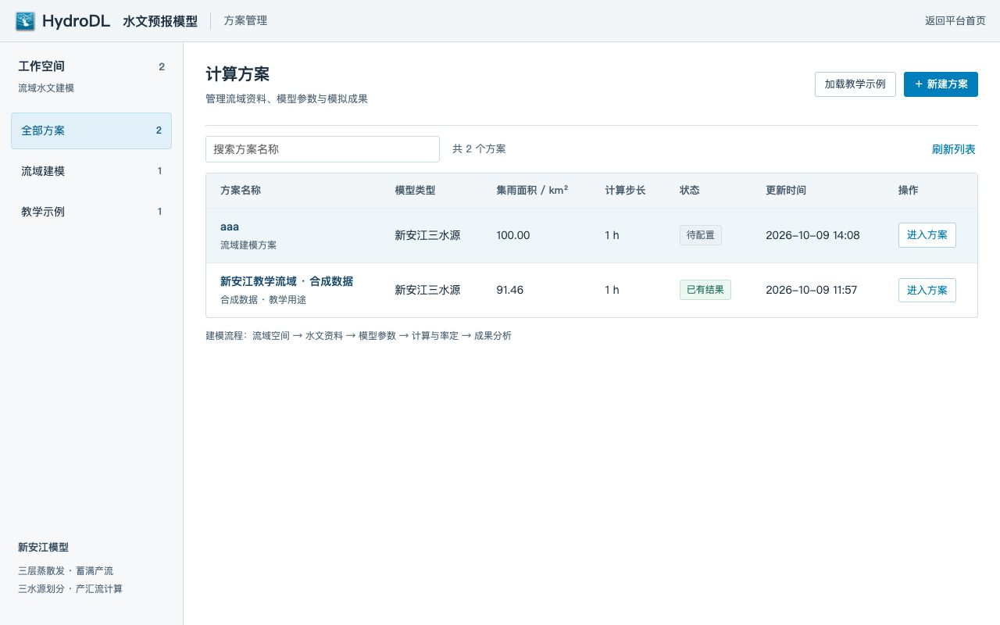
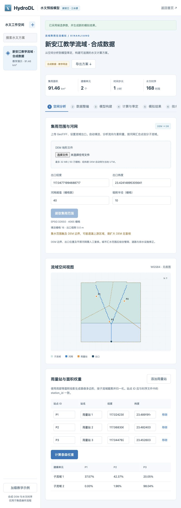
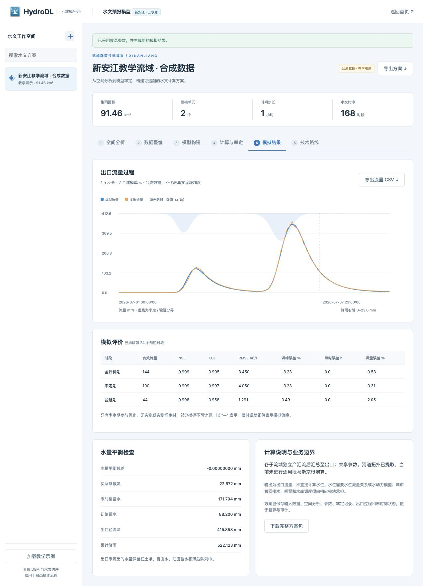
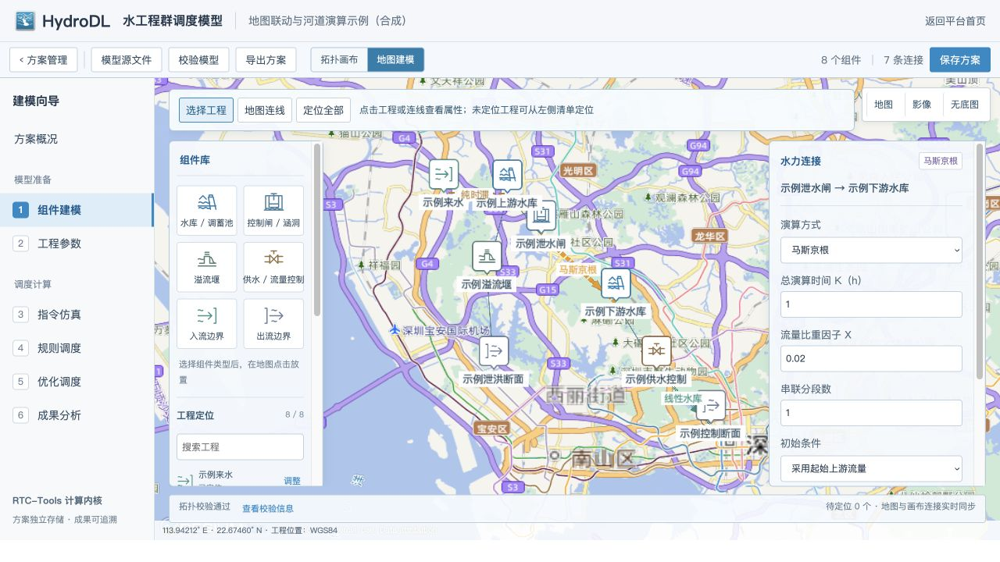

水文数据与预报
水文时间序列分析、数据质量控制，以及基于机器学习的水情趋势预测。
Research interests
从水文数据到工程应用，关注预报与调度中的实际问题。
水文时间序列分析、数据质量控制，以及基于机器学习的水情趋势预测。
结合水文水动力模型与数据驱动方法，研究区域洪涝模拟和快速预报。
探索强化学习及优化方法在水库群、闸泵群联合调度中的应用。
Research software
面向水文模拟与水工程调度的建模工作流，将数据、模型和结果分析组织在同一界面中。
平台围绕流域空间分析、水文资料整编、新安江模型计算与率定、成果分析等环节展开，并探索水工程群的组件化建模与调度。以下截图来自项目中的教学示例，使用合成数据。




Selected work
围绕预报、模拟与调度的部分论文和授权发明专利。
Publications
丁武、杨芳、王卫光等 · 《水利学报》，2025，56(12)：1647–1658。
Yang F., Ding W., Zhao J. 等 · Journal of Hydrology，2024，643：131998。
硕士学位论文，华中科技大学。
《计算机科学》，2020，47(S2)：459–463。
Selected patents
CN 121457183 B · 第一发明人
CN 121436484 B · 第一发明人
CN 116738874 B · 第二发明人
CN 115952958 B · 第一发明人
CN 116881860 B · 第二发明人
Background
以水利工程为基础，将数据分析、机器学习与工程问题联系起来。
河海大学
水文与水资源学院，博士研究生
珠江水利科学研究院
参与洪涝预报与水工程调度研究
华中科技大学
水利工程硕士
长沙理工大学
工学学士